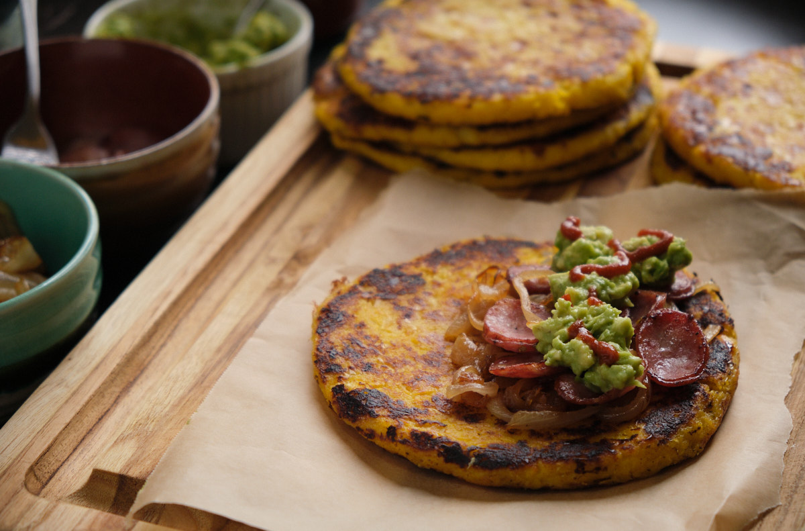

I really enjoy making this arepa de choclo recipe because it’s easy to prepare and can serve as a vessel for other toppings. I hadn’t heard of arepas until a couple of years back when I started discovering Colombian food.
I’ve tried various arepa recipes but none lived up to my expectations. After doing some research, I came across one that I could build upon. Now that I’ve made it many times, while adjusting ratios, I’m confident you will enjoy this delicious recipe.
A link to the YouTube video: Sweet Corn Patty with Toppings
Equipment
- Blender
- Bowl
- Pan
Ingredients
- 597 Grams Yellow Corn
- 4 Tbsp Milk (any type will do)
- 2 Tbsp Sugar
- 1 Large Egg
- 1 Cup Corn Flour (Pre-cooked) (I used white corn P.A.N.)
- 1 Tsp Kosher Diamond Salt (Use less for any other type of salt.)
- 300 grams Mozzarella Cheese (Can be substituted for other cheese that melts easily.)
Instructions
Blended Ingredients
- To a blender add: Corn, Milk, Sugar, Egg and Salt
- Blend using pulsing to retain some texture
- Set Aside
Flour and Cheese
- Into a bowl shred the mozzarella cheese
- Add 1 Cup of Corn Flour
Combine
- Add the blended corn mixure to the bowl and mix the dough very well.
Paties
- Form a ball of dough, medium size
- With the use of a press or by placing the ball in between two sheets of parchment paper you can make a round patty that resembles a thick tortilla. Approximately 1/4 inch (6.35mm) in thickness.
Otherwise, if you want to use your hands, wet them with water and a little oil. Flatten the dough and start shaping it until it forms a medium sized patty.
Cook
- To a pan with a medium heat add 1 tsp of oil and spread.
- Cook the arepas for a total of 4-5 minutes. 2:35 on each side or so until golden brown.
Eat!
- Eat as is or add your favorite toppings. In the picture above, I added caramelized onions, sausage, mashed avocado and topped it off with a bit of Sriracha sauce.
- For breakfast I just top it off with a little sour cream.